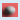
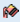
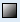
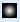
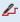
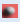
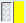
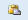
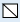

Applying Brush Editor Formats
Brush Editor view—one of many views available in the Graphics Editor—allows you to modify your drawing elements with options such as colors, gradients, light angles, and other special effects to achieve a truly custom look.
The Brushes group—found on the Home tab, is another way you can quickly apply fill, stroke, or background color to an element on the canvas.
NOTE: For more color and brush options, right-click the brush group icon to display the Brush Editor view. From the Brush Editor view, you can also set or adjust the color, using one of the following methods:
- The RGBA sliders in the Brush Editor view.
- A hexadecimal color code or a name, for example, “Green” in the # field to set the transparency, red, green, and blue values of the color you want to use as a fill.
- The Color Eyedropper tool; and then move the eyedropper to the location on your monitor screen that has the color you want to use as a fill. Release the mouse button.
Select the topic related to your task:
Apply Background Color
Using the Brush Editor View
- You are in Design or Test mode and have a graphic open.
- Select the drawing element or elements you want to apply background color.
- Navigate to the Brush Editor view.
- From the Brush bar at the top of the Brush view, click Background

. - From the Base Color chart, select the color you want to use as a fill.
- The background color is applied to the drawing element’s background. If this is the first color applied to the element, then the entire drawing element has the background applied to it, until a fill or stroke color is applied.
Using the Brushes Group
- You are in Design or Test mode and have a graphic open.
- Select the drawing element or elements to which you want to apply background color.
- On the Home tab, from the Brushes group, click the drop-down menu next to the Background icon
 .
. - The Base Color chart displays.
- Select the color you want to use as the background color.
- The background color is applied to the drawing element’s background. If the element has not other color applied to it, then, the entire drawing element will have the background applied to it, until you apply a fill or stroke color.
Apply Fills
Using the Brush Editor View
- You are in Design or Test mode and have a graphic open.
- Select the drawing element or elements you want to fill.
- Navigate to the Brush Editor view.
- From the Brush bar at the top of the Brush view, click Fill

. - From the Base Color chart, select the color you want to use as a fill.
- The fill is applied to the drawing element.
Using the Brushes Group
- You are in Design or Test mode and have a graphic open.
- Select the drawing element or elements you want to fill.
- On the Home tab, from the Brushes group, click the drop-down menu next to Fill
 .
. - The Base Color chart displays.
- Select the color you want to use as a fill.
- The fill is applied to the drawing element.
Apply Linear Gradients
- You are in Design or Test mode and have a graphic open.
- Select the drawing element or elements you want a linear gradient applied to.
- Navigate to the Brush Editor view.
- From the Brush bar at the top of the Brush Editor view, click Linear Gradient

. - The options for linear gradients displays.
- Select the options you want for your element or elements.
- The options for linear gradients displays, allowing you to edit the element as needed.
- To set the gradient style, do one of the following:
- From the Pre-defined drop-down menu, select a gradient definition.
- From the Gradient slider, click and drag the gradient stops until the desired setting is achieved. To add more gradient stops, click the gradient slider. A new stop is created. To remove a stop, simply click the stop and drag it away from the slider.
- To select a spread option, select a mode from the spread mode drop-down menu.
- By default the Start and End light source parameters are set so that they are relative to the element size. To maintain the position of the light source, regardless off the element size, click the Absolute check box.
- To define the vector Start and End points of the light, choose from one of the following methods:
- Enter values directly in the associated fields.
- Click the Adorners check box to visually enable the adorners, consisting of a centered line with a blue Start handle, a white Middle handle, and a red End handle. Click and move the points to the appropriate positions.
Apply Radial Gradients
- You are in Design or Test mode and have a graphic open. Any options you set for the selected element are optional and are applied as the selections are made. When you apply a radial gradient to an object, if the focal point moves outside its radial ellipse, you may have subtle differences between what you see on the install client (.CCG/.CCS) and the Flex Client application (.SVG).
- Select the drawing element or elements you want a radial gradient applied to.
- Navigate to the Brush Editor view.
- From the Settings bar at the top of the Brush Editor view, click Radial Gradient

. - The options for radial gradients displays, allowing you to edit the element as needed.
- To set the gradient style, do one of the following:
- From the Pre-defined drop-down menu, select a gradient definition.
- From the Gradient slider, click and drag the gradient stops until the desired setting is achieved. To add more gradient stops, click anywhere in the Brush Editor view and then click the gradient slider. A new stop is created. To remove a stop, simply click the stop and drag it away from the slider.
- To select a spread mode option, select a mode from the Spread Mode drop-down menu.
- By default the light source parameters are set so that it is relative to the element size. To maintain the position of the light source, regardless off the element size, click the Absolute check box.
- To define the Center, Origin, Radius X, and Radius Y parameters, choose from one of the following methods:
- Enter values directly in the associated fields.
- Click the Adorners check box to visually enable the adorners, consisting of the center point (icon), the origin, and the Radius X and Radius Y lines. Click and move each item around as needed to set the angle of the light source on the element.
Apply a Stroke
Using the Brush Editor
- You are in Design or Test mode and have a graphic open.
- Select the drawing element or elements you want to apply a stroke to.
- Navigate to the Brush Editor view.
- From the Brush bar at the top of the Brush Editor view, click Stroke

.
- The stroke is applied to the drawing element.
Using the Brushes Group
- You are in Design or Test mode and have a graphic open.
- Select the drawing element or elements you want to apply stroke.
- On the Home tab, from the Brushes group, click the drop-down menu next to Stroke
 .
. - The Base Color chart displays.
- Select the color you want to use as a stroke.
- The stroke is applied to the drawing element.
Apply the Toggle-Blinking Brush
- You are in Design or Test mode and have a graphic open. Any Brush Editor options you set for the selected element are optional and are applied as the selections are made.
NOTE: Do not confuse this with the Blinking property check box of the Layout group, which when enabled allows the associated element to blink (toggle between visible and non-visible) on the graphic canvas.
- Select the drawing element or elements you want to apply a blinking color to.
- Navigate to the Brush Editor view.
- From the Brush bar at the top of the Brush Editor view, click Fill , Stroke , or Background

. - Select Toggle Blinking .
- The main brush splits into a compound brush

- the first half is the Main Brush, and the second half, yellow by default, is the Blink Brush. - From the Base Color chart, select a color you want to use for the Blink Brush.
- The Blink Brush color changes to the selected color.
In Test or Runtime mode the element will toggle between the two colors applied to the main and blink brush.
Copy and Paste a Brush
- You are in Design or Test mode and have a graphic open.
- Select the drawing element from where you want to copy the brush.
- Navigate to the Brush Editor view.
- From the Brush bar at the bottom of the Brush Editor view, click Copy Brush .
- Select the drawing element or elements you want to paste the brush to.
- From the Brush bar, click Paste brush

.
- The brush is applied to the drawing element.
Set the Hue, Saturation, and/or Value (HSV)
- You want to change an element’s fill, stroke, or background color, you are in Design or Test mode, and you have a graphic open.
- Select the drawing element you want to set HSV for a fill or stroke of an element.
- Select the Brush Editor view.
- From the Brush bar, select the appropriate brush to apply to the element.
- The Brush Editor view color features are enabled and display. If you select No Brush

, the color palette does not display in the view. - Do one of the following:
- Click Fill .
- Click Stroke .
- Click Background .
- Move the mouse pointer to the HSV palette.
- The pointer changes to display a crosshairs
 pointer.
pointer. - Move the crosshairs pointer to the location on the HSV palette that has the color you want and Click that location.
- The fill, stroke, or background changes.
Select and Apply Color with the Eyedropper
- You are in Design or Test mode and have a graphic open.
- Select the drawing element or elements you want to fill.
- Expand the Brush Editor view.
- Click-and-drag Eyedropper and do one of the following:
- As you drag the eyedropper, it picks up the color of whatever you are moving your cursor over and the selected element on the canvas reflects the same updated color.
- Drag the eyedropper over a color property from the Brush Editor view, Base Color chart, select the color you want to use as a fill.
- Release the Eyedropper when the selected element is the desired color.
Related Topics
For background information, see Brush View and Brushes Group.
For workspace overview, see Brush Editor View.